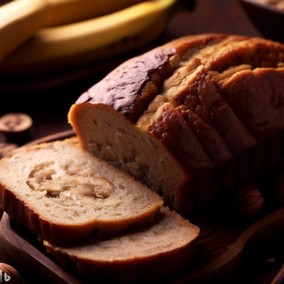
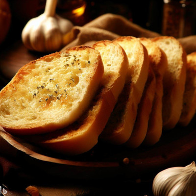

Receitas e imagens geradas 100% por inteligência artificial
Pão de Banana

3 bananas maduras esmagadas
1/2 xícara de óleo vegetal
1 ovo
1 xícara de açúcar
1 colher de chá de essência de baunilha
1 1/2 xícara de farinha de trigo
1 colher de chá de bicarbonato de sódio
1 pitada de sal
1/2 colher de chá de canela em pó (opcional)
Modo de preparo
Preaqueça o forno a 180°C e unte uma forma de pão.
Em uma tigela grande, misture as bananas esmagadas, óleo, ovo, açúcar e essência de baunilha até
ficar homogêneo.
Em outra tigela, misture a farinha de trigo, bicarbonato de sódio, sal e canela em pó (se
estiver usando).
Adicione os ingredientes secos à mistura de banana e misture até incorporar tudo.
Despeje a massa na forma de pão untada.
Asse por aproximadamente 50-60 minutos, ou até que um palito inserido no centro saia limpo.
Retire do forno e deixe esfriar na forma por alguns minutos.
Desenforme e deixe esfriar completamente em uma grade antes de cortar e servir.
Pão de alho

1 pão italiano (baguete ou outro pão de sua escolha)
1/2 xícara de manteiga amolecida
3 dentes de alho picados
2 colheres de sopa de salsa picada
1 pitada de sal
Modo de preparo
Preaqueça o forno a 180°C.
Corte o pão italiano em fatias diagonais, sem cortar até o final, deixando as fatias ainda
presas na
base do pão.
Em uma tigela, misture a manteiga amolecida, o alho picado, a salsa e o sal.
Espalhe a mistura de manteiga e alho entre as fatias do pão.
Envolva o pão em papel alumínio.
Leve o pão ao forno por cerca de 10 minutos, ou até que a manteiga derreta e o pão fique
levemente
dourado.
Retire o papel alumínio e asse por mais 5 minutos ou até que o pão fique levemente crocante.
Retire do forno e sirva quente.
Bolo de limão
2xícaras de farinha de trigo
1 xícara de açúcar
3 ovos
1/2 xícara de óleo vegetal
1 xícara de leite
Suco e raspas de 2 limões
1 colher de sopa de fermento em pó
Modo de preparo
Preaqueça o forno a 180°C e unte uma forma de bolo.
Em uma tigela, misture a farinha de trigo e o açúcar.
Adicione os ovos, o óleo e o leite à mistura seca e mexa bem até ficar homogêneo.
Acrescente o suco e as raspas de limão à massa e misture novamente.
Por último, adicione o fermento em pó e misture delicadamente até incorporar à massa.
Despeje a massa na forma untada e alise a superfície.
Asse o bolo de limão no forno por aproximadamente 30-35 minutos, ou até que um palito inserido
no centro saia limpo.
Retire do forno e deixe esfriar na forma por alguns minutos antes de desenformar.
Para decorar, você pode polvilhar açúcar de confeiteiro ou cobrir com uma calda de limão (suco
de limão misturado com açúcar) e raspas de limão.